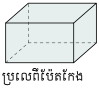
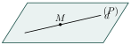
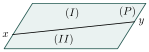
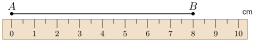

12 សញ្ញាណដំបូងនៃរូបធរណីមាត្រ
- បង្ហាញសញ្ញាណនៃចំណុច បន្ទាត់ កន្លះបន្ទាត់ និងអង្កត់
- ប្រៀបធៀបអង្កត់
- ធ្វើប្រមាណវិធីបូកនិងដកលើអង្កត់
- ធ្វើប្រមាណវិធីគុណនិងចែកអង្កត់នឹងមួយចំនួន ។
1. សញ្ញាណរូបធរណីមាត្រ
1.1 សញ្ញាណទូទៅនៃរូបធរណីមាត្រ



ការសិក្សាអំពីតូបរាង ទំហំ វិមាត្រទីតាំង និងលក្ខណៈនៃវត្ថុ ជាការចាំបាច់នៅក្នុងជីវភាពរស់នៅប្រចាំថ្ងៃ ។
1.2 ចំណុច
បើគេយកចុងខ្មៅដៃស្រួចទៅចុចលើក្រដាសនោះគេបានស្នាមមួយមួយ រូបផ្កាយនៅលើមេឃ ខ្សាច់មួយគ្រាប់ ... រូបភាពទាំងអស់នេះហៅថា ចំណុច ។
- ចំណុចគ្មានវិមាត្រ គ្មានទទឹង គ្មានបណ្តោយ គ្មានកម្ពស់ទេ ។
- ចំណុចជាធាតុតូចបំផុត គេហៅថា ភារៈធរណីមាត្រងាយជាងគេ ។
គេតាងចំណុចដោយ

លោកគ្រូបានឱ្យសិស្សយកដើមផ្កាចំនួន 6 ដើមទៅដាំឱ្យបាន 4 ជួរ ដែលក្នុងមួយជួរៗមាន 3 ដើម ។ តើត្រូវដាំរបៀបណា ? ដៅចំណុចដែលត្រូវដាំ ?

ឱ្យឧទាហរណ៍រូបភាពចំណុចដទៃៗដែលមាននៅជុំវិញខ្លួន ។
1.3 បន្ទាត់
បើគេរំកិលចុងខ្មៅដៃនៅលើក្រដាស គេបានរូបភាពមួយហៅថាបន្ទាត់ \(\displaystyle d\) ។
បើគេយកម្ជុលពីរដើមមកដោតទៀងត្រង់ \(\displaystyle A\) និង \(\displaystyle B\) ។ រួចគេយកខ្សែអំបោះពីរសរសៃដែលមានពណ៌ខុសគ្នាមកចងសន្ធឹងត្រង់ \(\displaystyle A\) និង \(\displaystyle B\) គេសង្កេតឃើញថាខ្សែអំបោះនៅត្រង់ចន្លោះចំណុច \(\displaystyle A\) និង \(\displaystyle B\) ត្រួតស៊ីគ្នា ។
បន្ទាត់គ្មានកម្ពស់ គ្មានទទឹងតែគេអាចនិយាយពីបណ្តោយវាបាន ។ បន្ទាត់ជាភារៈធរណីមាត្រដែលមានវិមាត្រមួយ ។
តាមឧទាហរណ៍ខាងលើ គេសង្កេតឃើញថាតាមពីរចំណុចផ្សេងគ្នា \(\displaystyle A\) និង \(\displaystyle B\) គេអាចគូសបានបន្ទាត់តែមួយគត់ ។ គេកំណត់សរសេរ : បន្ទាត់ \(\displaystyle AB\) ។ គេអាចបន្លាយ \(\displaystyle AB\) បានទាំងសងខាងព្រោះបន្ទាត់គ្មានព្រំដែន ។
ស្វ័យសត្យ
- តាមចំណុចមួយគេអាចគូសបានបន្ទាត់ច្រើនរាប់មិនអស់
- តាមចំណុចពីរផ្សេងគ្នាគេអាចគូសបានបន្ទាត់តែមួយគត់ ឬច្រើនរាប់មិនអស់តែត្រួតស៊ីគ្នា ។
រូបខាងក្រោមតាងឱ្យបន្ទាត់ \(\displaystyle d\) និងចំណុច \(\displaystyle A, B, C, E, H\) ។ តើចំណុចណាខ្លះជារបស់បន្ទាត់ \(\displaystyle d\) និងមិនមែនជារបស់បន្ទាត់ \(\displaystyle d\) ?

ចំណុច \(\displaystyle A, B, C, E\) ស្ថិតនៅលើបន្ទាត់ \(\displaystyle d\) តែមួយ គេថា \(\displaystyle A, B, C, E\) រត់ត្រង់គ្នា គេសរសេរ \(\displaystyle A \in d \quad , \quad B \in d \quad , \quad C \in d \quad , \quad E \in d\) សញ្ញា \(\displaystyle \in\) អានថាជារបស់ ។
ចំណុច \(\displaystyle H\) មិនស្ថិតនៅលើបន្ទាត់ \(\displaystyle d\) ទេ
គេសរសេរ \(\displaystyle H \notin d\) អានថា \(\displaystyle H\) មិនមែនជារបស់បន្ទាត់ \(\displaystyle d\) ។
ជំនួស ... ខាងក្រោមដោយសញ្ញា \(\displaystyle \in\) ឬ \(\displaystyle \notin\)

ក. \(\displaystyle A \dots d\) ខ. \(\displaystyle F \dots d\) គ. \(\displaystyle D \dots d\)
ឃ. \(\displaystyle B \dots d\) ង. \(\displaystyle E \dots d\) ច. \(\displaystyle C \dots d\)
1.4 កន្លះបន្ទាត់
ឧទាហរណ៍ : គេមានបន្ទាត់ \(\displaystyle xy\) មួយនិងចំណុច \(\displaystyle M\) មួយ ដែល \(\displaystyle M \in xy\) នោះគេបាន
គេថាចំណុច \(\displaystyle M\) ចែកបន្ទាត់ \(\displaystyle xy\) ជាពីរផ្នែកគឺ \(\displaystyle Mx\) និង \(\displaystyle My\) ។ ផ្នែកនីមួយៗហៅថាកន្លះបន្ទាត់ ។ គេសរសេរកន្លះបន្ទាត់ \(\displaystyle Mx\) និង \(\displaystyle My\) ។ ចំណុច \(\displaystyle M\) ហៅថាគល់នៃកន្លះបន្ទាត់ ។
- ដើម្បីកំណត់កន្លះបន្ទាត់មួយ គេត្រូវសរសេរ “ គល់ ” មុន ។
- កន្លះបន្ទាត់ \(\displaystyle Mx\) និង \(\displaystyle My\) ដែលផ្តុំបានបន្ទាត់ \(\displaystyle xy\) គេហៅថា “ កន្លះបន្ទាត់ឈមគ្នា ” ។
- កន្លះបន្ទាត់មានព្រំដែនតែម្ខាងទេ ។
សរសេរកន្លះបន្ទាត់តាមរូបខាងក្រោម
គេបានកន្លះបន្ទាត់ \(\displaystyle Ax \; , \; Ay \; , \; Dx\) និង \(\displaystyle Dy\) ។
គេមានបន្ទាត់ \(\displaystyle AB\) និង \(\displaystyle EF\) ប្រសព្វគ្នាត្រង់ចំណុច \(\displaystyle O\) ។ គូសរូប និងសរសេរឈ្មោះកន្លះបន្ទាត់ទាំងនោះ ។
កន្លះបន្ទាត់ \(\displaystyle OA \; , \; OB \; , \; OE \; , \; OF\) ។
ពិនិត្យមើលរូប រួចឆ្លើយនឹងសំណួរខាងក្រោម ?
តាមរូបខាងលើ តើមានកន្លះបន្ទាត់ប៉ុន្មាន ? សរសេរឈ្មោះកន្លះបន្ទាត់ទាំងនោះ ។
1.5 ប្លង់
គេឃើញថាផ្ទៃរាបស្មើនៅជុំវិញខ្លួនយើង ដូចជាផ្ទៃជញ្ជាំង ផ្ទៃសៀវភៅ ផ្ទៃក្តារខៀនមួយសន្លឹកជាសញ្ញាណនៃប្លង់ ។
បើបន្ទាត់ \(\displaystyle d\) នៅក្នុងប្លង់ \(\displaystyle P\) មានន័យថាគ្រប់ចំណុចទាំងអស់នៃបន្ទាត់ \(\displaystyle d\) ស្ថិតនៅក្នុងប្លង់ \(\displaystyle P\) ដែរ ។

បានសេចក្ដីថា \(\displaystyle M \in d \implies M \in P\) ។
បើបន្ទាត់ \(\displaystyle xy\) ចែកប្លង់ \(\displaystyle P\) ជាពីរផ្នែកគឺ \(\displaystyle (I)\) និងផ្នែក \(\displaystyle (II)\) ដែល \(\displaystyle (I)\) និង \(\displaystyle (II)\) ហៅថាកន្លះប្លង់ នោះបន្ទាត់ \(\displaystyle xy\) ជាព្រំដែនរួមនៃកន្លះប្លង់ទាំងពីរ ។

រកឧទាហរណ៍នៅជុំវិញខ្លួនដែលឱ្យរូបភាពប្លង់ ។
ផ្ទៃទឹកនៅនឹងថ្កល់ ផ្ទៃក្តារខៀន ផ្ទៃកញ្ចក់ ...... ជារូបភាពប្លង់ ។
បើគេរំកិលរង្វង់កងមួយលើតុ តើគេសង្កេតឃើញរង្វង់នោះយ៉ាងដូចម្តេច ? ចូរធ្វើការសន្និដ្ឋាន ?
- គេឃើញវាត្រួតស៊ីគ្នាជានិច្ច ។
- ដូចនេះរង្វង់អាចរំកិលលើប្លង់បាន ។
នៅលើប្លង់ \(\displaystyle P\) មួយគេមានបីចំណុច \(\displaystyle A, B, C\) រត់មិនត្រង់គ្នា (ដូចរូបខាងស្តាំ) ។ ហើយចំណុច \(\displaystyle S\) មួយនៅក្រៅប្លង់ \(\displaystyle P\) គេគូសបន្ទាត់ \(\displaystyle SA, SB\) និង \(\displaystyle SC\) ។

ក. ចូររាប់ប្លង់ថ្មីដែលទើបនឹងកើតមាន ។
ខ. តើប្លង់ \(\displaystyle P\) មានបន្ទាត់ណាខ្លះរួមជាមួយនិងប្លង់ថ្មីទាំងនោះ ?
គ. ចូរប្រាប់ថាតើចំណុច \(\displaystyle S, A, B, C\) ជារបស់ប្លង់ណាខ្លះ ?
2. អង្កត់
2.1 សំណង់អង្កត់
គេមានបន្ទាត់ \(\displaystyle l\) និង \(\displaystyle M \in l\) ដែលចំណុច \(\displaystyle M\) មិនត្រួតលើ \(\displaystyle N\) ។
នោះគេបានផ្នែកមួយនៃបន្ទាត់ខណ្ឌដោយចំណុច \(\displaystyle M\) និង \(\displaystyle N\) ហៅថាអង្កត់ ។
គេកំណត់សរសេរអង្កត់ \(\displaystyle MN\) ចំណុច \(\displaystyle M\) និង \(\displaystyle N\) ហៅថាចុងអង្កត់ បន្ទាត់ \(\displaystyle l\) ហៅថាទ្រនៃអង្កត់ \(\displaystyle MN\) ។
គេដឹងប្រវែងអង្កត់មួយកាលណាគេយកបន្ទាត់ក្រិតទៅវាស់វា (គិតជា \(\displaystyle cm\)) ។

អង្កត់ \(\displaystyle AB\) មានប្រវែង \(\displaystyle 8cm\) ។ គេកំណត់សរសេរ \(\displaystyle AB = 8cm\) ។
នៅលើបន្ទាត់ \(\displaystyle xy\) មួយ គូសអង្កត់ \(\displaystyle A'B'\) ឱ្យមានប្រវែងស្មើនឹងអង្កត់ \(\displaystyle AB\) ។
- បើកដង្កៀបដែកឈានដើម្បីវាស់ប្រវែង \(\displaystyle AB\)
- ដៅចំណុច \(\displaystyle A' \in xy\)
- រក្សាដង្កៀបដែកឈានឱ្យនៅដដែល រួចដាក់ចុងម្ខាងត្រង់ចំណុច \(\displaystyle A'\) និងចុងម្ខាងទៀតគូសលើបន្ទាត់ \(\displaystyle xy\) ត្រង់ \(\displaystyle B'\) គេបានអង្កត់ \(\displaystyle A'B'\) ដែល \(\displaystyle AB = A'B'\) ។

ដូចនេះគេបាន \(\displaystyle AB = A'B'\) តាមបម្រាប់ ។
បំពេញចម្លើយនិងអង្កេតតាមលំនាំគំរូដែលឱ្យ

| ចំណុច 2 | ចំណុច 3 | ចំណុច 4 | ចំណុច 5 |
| អង្កត់ : 1 | អង្កត់ : 3 | អង្កត់ : 6 | អង្កត់ : ……… |
| \(\displaystyle 0+1\) | \(\displaystyle 1+2\) | \(\displaystyle 1+2+3\) | …………… |
2.2 ប្រៀបធៀបអង្កត់ពីរ
គេមានអង្កត់ \(\displaystyle AB\) និងអង្កត់ \(\displaystyle CD\) ។ នៅលើបន្ទាត់ \(\displaystyle xy\) មួយគេដៅចំណុច \(\displaystyle A\) និង \(\displaystyle C\) ឱ្យត្រួតស៊ីគ្នា បើចំណុច \(\displaystyle B\) និងចំណុច \(\displaystyle D\) ត្រួតស៊ីគ្នាលើ \(\displaystyle xy\) នោះគេថាអង្កត់ \(\displaystyle AB\) និងអង្កត់ \(\displaystyle CD\) ត្រួតស៊ីគ្នាហើយមានប្រវែងស្មើគ្នា ។

គេសរសេរ \(\displaystyle AB = CD\) ។
គេមានអង្កត់ \(\displaystyle AB\) និងអង្កត់ \(\displaystyle CD\) ។ គេដៅចំណុច \(\displaystyle A\) និង \(\displaystyle C\) នៅលើបន្ទាត់ \(\displaystyle xy\) មួយ ឱ្យចំណុចទាំពីរត្រួតស៊ីគ្នា ហើយដាក់ \(\displaystyle B\) និង \(\displaystyle D\) នៅលើ \(\displaystyle xy\) ផ្នែកខាង \(\displaystyle y\) ។ បើ \(\displaystyle D\) នៅចន្លោះ \(\displaystyle A\) និង \(\displaystyle B\) នោះអង្កត់ \(\displaystyle AB\) ធំជាង \(\displaystyle CD\) ហើយអង្កត់ \(\displaystyle CD\) តូចជាង \(\displaystyle AB\) ។
គេសរសេរ \(\displaystyle AB > CD\) ឬ \(\displaystyle CD < AB\) ។
គេមានចំណុចបួន \(\displaystyle A, B, C, D\) នៅលើបន្ទាត់ \(\displaystyle xy\) ដូចរូបខាងក្រោម :
ក. ដោយប្រើដែកឈាន ប្រៀបធៀបអង្កត់ \(\displaystyle AB\) និង \(\displaystyle CD\) ។
ខ. តើគេអាចសន្និដ្ឋានយ៉ាងណាពោះអង្កត់ \(\displaystyle AC\) និង \(\displaystyle BD\) ។
ក. ប្រើចុងទាំងពីរនៃដែកឈានមកដៅចំចំណុច \(\displaystyle A\) និង \(\displaystyle B\) ។ ដោយរក្សាទំហំដែកឈាននេះ គេឃើញចុងទាំងពីរនៃដែកឈានដៅលើចំណុច \(\displaystyle C\) និង \(\displaystyle D\) ។
ដូចនេះ \(\displaystyle AB = CD\) ។
ខ. អង្កត់ \(\displaystyle AC\) និង \(\displaystyle BD\) មានផ្នែករួមគឺអង្កត់ \(\displaystyle BC\) ដោយ \(\displaystyle AB = CD\) នោះ \(\displaystyle AC = BD\) ។
គេមានចំណុចបួន \(\displaystyle A, B, C, D\) នៅលើបន្ទាត់ \(\displaystyle xy\) ដូចរូបខាងក្រោម ។
ដោយប្រើដែកឈាន :
ក. ប្រៀបធៀបអង្កត់ \(\displaystyle AB\) និងអង្កត់ \(\displaystyle BC\) ។
ខ. ប្រៀបធៀបអង្កត់ \(\displaystyle CD\) និងអង្កត់ \(\displaystyle BC\) ។
គ. តើគេអាចសន្និដ្ឋានយ៉ាងណាចំពោះអង្កត់ \(\displaystyle AC\) និងអង្កត់ \(\displaystyle CD\) ?
2.3 វិធីបូក និងដកអង្កត់
គណនាផលបូកនៃអង្កត់ \(\displaystyle AB \; , \; CD\) និង \(\displaystyle EF\) ។
អង្កត់ \(\displaystyle AF\) ហៅថាផលបូកនៃអង្កត់ \(\displaystyle AB \; , \; CD\) និង \(\displaystyle EF\) ។
ដូចនេះ \(\displaystyle AF = AB + CD + EF\) ។
គណនាផលដកនៃអង្កត់ \(\displaystyle AB\) និង \(\displaystyle CD\) ។ អង្កត់ \(\displaystyle DB\) ហៅថាផលដកនៃអង្កត់ \(\displaystyle AB\) និង \(\displaystyle CD\) ។

ដូចនេះ \(\displaystyle DB = AB - CD\) ។
ដើម្បីធ្វើប្រមាណវិធីបូក ឬដកលើអង្កត់បានលុះត្រាតែ
- ដាក់អង្កត់ទាំងនោះឱ្យនៅលើបន្ទាត់តែមួយ
- ដាក់ឱ្យបានជាអង្កត់តគ្នា ។
រកប្រវែងផ្លូវដែលកីឡាកររត់ពីទីតាំង \(\displaystyle A, B\) និង \(\displaystyle C\) រត់បណ្តាក់គ្នាដូចរូបភាពខាងក្រោម

ចម្ងាយផ្លូវដែលកីឡាករទាំងបីនាក់រត់បាន
ដូចនេះ ចម្ងាយផ្លូវដែលកីឡាករទាំងបីនាក់រត់បាន \(\displaystyle AD = 2059m\) ។
នៅលើបន្ទាត់ \(\displaystyle d\) គេដៅចំណុច \(\displaystyle A, B\) និង \(\displaystyle C\) ដែល \(\displaystyle AB = 12cm\) និង \(\displaystyle BC = 46cm\) ។ គណនាប្រវែង \(\displaystyle MN\) បើចំណុច \(\displaystyle M, N\) ជាចំណុចកណ្តាលនៃអង្កត់ \(\displaystyle AB\) និង \(\displaystyle BC\) ។
2.4 គុណ និងចែកអង្កត់នឹងមួយចំនួន
គេមានអង្កត់ដូចរូបខាងស្តាំ ។

គេបាន \(\displaystyle AF = AB + BC + CD + DE + EF\)
ដោយ \(\displaystyle AB = BC = CD = DE = EF\)
\(\displaystyle AF = AB + BC + CD + DE + EF = 5 \times AB\) ។ គេឃើញថា \(\displaystyle AF\) ជាផលគុណរវាងអង្កត់ \(\displaystyle AB\) និង 5 ។
បើគេមានសមភាព \(\displaystyle PQ = 4AB\) ។

បានន័យថា \(\displaystyle AB\) ជាអង្កត់ដែលត្រូវគុណនឹង 4 ដើម្បីឱ្យបានអង្កត់ \(\displaystyle PQ\) ។ គេថា \(\displaystyle AB\) ជាផលចែកអង្កត់ \(\displaystyle PQ\) នឹង 4 ។
គេបាន \(\displaystyle AB = PQ \div 4\) ឬ \(\displaystyle AB = \frac{PQ}{4}\) ។
គេមាន \(\displaystyle I\) ជាចំណុចកណ្តាលនៃអង្កត់ \(\displaystyle AB \; , \; J\) កណ្តាលនៃអង្កត់ \(\displaystyle AI\) និង \(\displaystyle K\) កណ្តាលនៃអង្កត់ \(\displaystyle IB\) ។
ក. តើអង្កត់ \(\displaystyle AB\) ស្មើនឹងប៉ុន្មានដងអង្កត់ \(\displaystyle AI\) និង \(\displaystyle AJ\) ?
ខ. តើអង្កត់ \(\displaystyle JK\) ស្មើនឹងប៉ុន្មានដងអង្កត់ \(\displaystyle AB\) ?
ក. \(\displaystyle AB = 2AI \quad , \quad AB = 4AJ\)
ខ. \(\displaystyle JK = JI + IK = \frac{AI}{2} + \frac{IB}{2} = \frac{AI + IB}{2} = \frac{AB}{2}\) ។
ផ្លូវពីភូមិ \(\displaystyle A\) ទៅភូមិ \(\displaystyle B\) មានចម្ងាយ \(\displaystyle 24.6km\) ។ មនុស្សម្នាក់ជិះកង់ចេញពីភូមិ \(\displaystyle A\) ទៅភូមិ \(\displaystyle B\) ហើយម៉ូតូអ្នកជិះម៉ូតូចេញពីភូមិ \(\displaystyle B\) ទៅភូមិ \(\displaystyle A\) ។ បើគេដឹងថាចម្ងាយពីភូមិ \(\displaystyle B\) មកកន្លែងជួបស្មើនឹងបីដងនៃចម្ងាយពីភូមិ \(\displaystyle A\) មកទីជួបគ្នា ។ រកចម្ងាយផ្លូវដែលអ្នកទាំងពីរបានធ្វើដំណើរ ។
តាង \(\displaystyle x\) ជាចម្ងាយផ្លូវដែលអ្នកជិះកង់បានធ្វើដំណើរ ។
\(\displaystyle 3x\) ជាចម្ងាយផ្លូវដែលអ្នកជិះម៉ូតូបានធ្វើដំណើរ ។

គេបាន \(\displaystyle x + 3x = 24.6\)
\(\displaystyle 4x = 24.6\) នាំឱ្យ \(\displaystyle x = \frac{24.6}{4} = 6.15km\)
\(\displaystyle 3x = 3 \times 6.15 = 18.45km\) ។
ដូចនេះ អ្នកជិះកង់ធ្វើដំណើរបាន \(\displaystyle 6.15km\) និងអ្នកជិះម៉ូតូធ្វើដំណើរបាន \(\displaystyle 18.45km\) ។
គេមានបីចំណុច \(\displaystyle X, Y, Z\) នៅលើបន្ទាត់ \(\displaystyle \Delta\) ហើយ \(\displaystyle S\) ជាចំណុចកណ្តាល \(\displaystyle YZ\) ។
ក. គណនាប្រវែង \(\displaystyle XS\) ដោយដឹងថា \(\displaystyle XY = 8cm \; , \; XZ = 20cm\)
ខ. បង្ហាញថា \(\displaystyle XS = \frac{XY + XZ}{2}\) ។
លំហាត់
- គេមាន 3 ចំណុច \(\displaystyle A, B, C\) រត់មិនត្រង់គ្នា គូសគ្រប់បន្ទាត់ដែលកាត់តាមពីរចំណុចៗ ។ តើគេបានបន្ទាត់ប៉ុន្មាន ? រាប់ និងសរសេរបន្ទាត់ទាំងនោះ ។
- តាមចំណុច \(\displaystyle A\) នៃបន្ទាត់មួយ គូសនៅលើបន្ទាត់នោះនូវអង្កត់ដែលមានប្រវែងស្មើនឹងអង្កត់ស្គាល់មួយ ។ តើអ្នកគូសបានអង្កត់ប៉ុន្មាន ?
ដែកមួយសរសៃ (តាងឱ្យបន្ទាត់) ចាក់ទម្លុះបាល់មួយ (តាងឱ្យផ្ទៃមិនរាប) បានពីរចំណុចផ្សេងគ្នា (ដូចរូបខាងស្តាំ) តើសរសៃដែកនេះឋិតនៅក្នុងផ្ទៃបាល់ទាំងមូលដែរឬទេ ?

- ដោយប្រើបន្ទាត់និងដែកឈាន សង់អង្កត់មួយដែលជាផលបូក (ផលដក) នៃអង្កត់ស្គាល់ពីរ ?
- អង្កត់ \(\displaystyle MN\) មានរង្វាស់ \(\displaystyle 18cm\) ។ \(\displaystyle I\) ជាចំណុចមួយនៃ \(\displaystyle MN\) ចែក \(\displaystyle MN\) ជាអង្កត់ពីរមិនស្មើគ្នា ។ \(\displaystyle A\) និង \(\displaystyle B\) ជាចំណុចកណ្តាលនៃអង្កត់ \(\displaystyle MI\) និង \(\displaystyle NI\) ។ គណនា \(\displaystyle AB\)
- លើបន្ទាត់ \(\displaystyle xy\) គេដៅចំណុចបី \(\displaystyle A, B, C\) តាមលំដាប់នេះ ដោយ \(\displaystyle AB = 2BC\) ។ បើ \(\displaystyle AC = 18cm\) ។ គណនារង្វាស់ \(\displaystyle AB\) និង \(\displaystyle BC\) ?
- គេមាន 4 ចំណុច \(\displaystyle A, B, C\) និង \(\displaystyle D\) រៀបតាមលំដាប់នៅលើបន្ទាត់ \(\displaystyle \Delta\) មួយដោយដឹងថា \(\displaystyle AB = CD = 3cm \; , \; BC = 5cm\) ។ ប្រៀបធៀបអង្កត់ \(\displaystyle AC\) និង \(\displaystyle BD\) ។
- គេមានអង្កត់ \(\displaystyle AB \; , \; CD\) និង \(\displaystyle EF\) លើបន្ទាត់ \(\displaystyle xy\) មួយ ។ សង់អង្កត់ \(\displaystyle MN = CD + AB\) និងអង្កត់ \(\displaystyle PQ = CD - AB\) ។ តើអ្នកសង្កេតឃើញយ៉ាងដូចម្តេចចំពោះអង្កត់ \(\displaystyle PQ\) ។
ម្ជុលដេរមួយដើមមានប្រវែងស្មើនឹង \(\displaystyle 35mm\) ។
- ក. បើខ្សែលួសមានប្រវែង \(\displaystyle 52.50m\) តើធ្វើម្ជុលបានប៉ុន្មានដើម ?
- ខ. បើ 20 % នៃប្រវែងខ្សែលួសត្រូវខូចនៅពេលផលិត ។ រកចំនួនម្ជុលដេរធ្វើបាន ?
- ខ្យងមួយវារឡើងពីក្នុងអណ្តូងដែលមានជម្រៅ \(\displaystyle 8m\) នាពេលព្រឹក ។ នៅពេលយប់វាវារបានកម្ពស់ \(\displaystyle 4m\) ហើយនៅពេលថ្ងៃវាធ្លាក់ចុះ \(\displaystyle 2m\) ទៅវិញ ។ តើប៉ុន្មានថ្ងៃ ទើបខ្យងនោះវារចេញពីអណ្តូងរួច ?
- សុខាដាំដើមមៀនចំនួន 6 ជួរ ដែលក្នុងមួយជួរៗមាន 4 ដើម ។ តើត្រូវដាំរបៀបណាទើបមានដើមមៀនតែ 10 ដើម ? ចូរគូសប្លង់ និងដៅចំណុចដែលត្រូវដាំ ?
ខ្លឹមសារ៖ សៀវភៅពុម្ពគណិតវិទ្យាថ្នាក់ទី៧ របស់ក្រសួងអប់រំ យុវជន និងកីឡា · វាយអត្ថបទ គូររូបភាពឡើងវិញ និងរៀបចំលើអនឡាញដោយលោកគ្រូ សាន សុខលី សម្រាប់ការសិក្សាដោយឥតគិតថ្លៃ និងមិនរកប្រាក់ចំណេញ។ មិនមែនជាការបោះពុម្ពផ្លូវការរបស់ក្រសួងទេ។